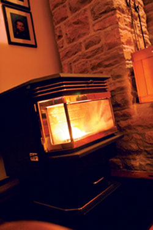
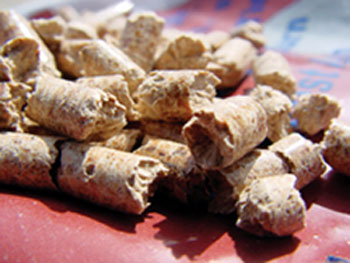
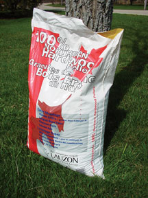
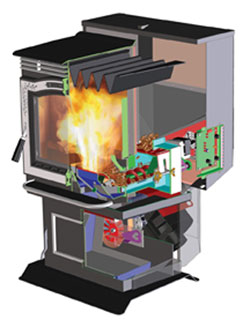
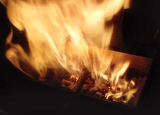
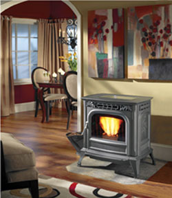
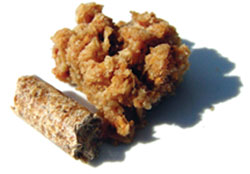

Wood is a great renewable heating option - widely available and clean burning (in EPA-certified stoves). But for some of us, handling the firewood and tending the fire require too much time. If a traditional woodstove isn’t right for you, you might want to check out pellet stoves, which burn pellets made of compressed wood byproducts and other biomass.
That’s because the pellet-heating lifestyle fits somewhere between the automated convenience of gas, oil or electric systems and the hands-on requirements of a woodstove. Pellet appliances vary from designs that are lit manually, with heat output controlled directly by the homeowner using a dial or buttons, to those units that ignite electrically, with pellet supply and heat output controlled automatically by a wall-mounted thermostat.
Another reason to consider switching from fossil-fueled heat sources to a pellet stove: It can reduce your carbon footprint. Wood pellets produce almost no net climate-changing carbon dioxide if they are used as fuel - although some fossil fuels typically are used in the manufacture and transportation of pellets.
The technology for modern residential pellet heating systems was invented back in 1983. This technology is now reliable, mature and effective. The main question left to answer is whether the pellet lifestyle makes sense for you. And to answer this question you need a glimpse inside the process.
Starting a pellet stove takes about five minutes. Even without a thermostat, you can choose the amount of heat you want, because heat output is variable by changing the setting of a single control that adjusts the exhaust fan speed and the speed of the auger that feeds pellets to the burn pot.
Pellet consumption ranges vary, depending on settings and circumstances. Manufacturers list input in British thermal units per hour (Btu/hr). Maximum input ranges from 30,000 to 48,000 Btu/hr, with many stoves claiming around 40,000 Btu/hr. (Actual heat output will be less because not all wood energy ends up as heat delivered to a building.)
Some models heat one space, while other models can heat an entire house. Depending on the type of stove and how hot it is running, the fans and auger may make noticeable noise, although some models run almost silently.
Although bulk-fed pellet heating systems do exist (they’re especially popular in Sweden), the majority of residential systems in North America rely on 40-pound bags of pellet fuel that are poured into a hopper one bag at a time. The bags are often shipped on pallets protected by weatherproof wrappings, but pellet bags do need to be stored inside a building to keep them dry. Pellets must be bone-dry to burn correctly. Laying in a supply of pellets early is important because mid-winter regional pellet shortages have happened in the past few years. If you plan to rely on pellets for your main heat, consider buying your full winter supply during the previous summer. Don’t leave the purchase until the last minute, or you could be disappointed.
Filling the stove’s pellet hopper is a fairly easy job, although it takes a little practice to do it without causing dust to enter the room. Filling frequency depends on heat demand. At the minimum heat level, the stove might only burn 1 pound of pellets an hour. In cold weather when the load is high, and if you have a large space to heat, you might burn as much as 5 pounds per hour, meaning you will be adding a bag of fuel up to three times a day. Of course, the amount of fuel you need to use will depend on your climate zone, general energy efficiency of your house and the area being heated. Brad Leonard, a pellet heating expert with Renewable Energy in Kingston, Ontario, Canada, advises his customers to plan on using an average of one bag of fuel for each day of the heating season.
Ash removal is another necessary task, although its frequency depends on fuel quality and the type of burn pot the stove model uses. For some models, ash removal is a daily job; others can run for several days without ash removal. The ash content of the fuel is another factor that affects the rate of buildup.
Ash also builds up downstream of the burn pot and ash pan. Tiny particles called fly ash are carried in the exhaust stream through the heat exchanger and into the exhaust fan housing and venting system. These areas need to be cleaned to keep the stove running properly. A buildup of fly ash can cause an exhaust flow restriction, which will trip a pressure-sensitive switch, shutting the stove down. You will either need a professional to service the stove frequently or learn where these important nooks and crannies are so you can clean them yourself.
The best way to remove fly ash is with a vacuum cleaner - either a special pellet stove vacuum or a shop vacuum with a drywall filter. The frequency of vacuuming depends on fuel ash content, stove design, venting configuration and how much fuel you use. You may need to clean the vent twice a year; but internal parts such as the fan housing, as often as every two weeks.
How does the cost of pellet heating compare with other options? That’s a tricky question because of regional differences and because energy prices are volatile these days. Leonard says that pellet heating is currently about the same cost as natural gas and roughly half the cost of oil. In cities, pellets compare favorably with cut, split and delivered firewood, although firewood tends to be significantly cheaper in rural areas. That makes pellet heating one of the best buys for urban or suburban home heating. Leonard says that 50 bags, or 1 ton of pellets, is roughly equivalent in heating power to a full 4-foot-by-4-foot-by-8-foot cord of firewood. These are general guidelines, so when considering if pellet heating is suitable for your household, you should do your own research to confirm local pricing.
Some heating pellets are made from the byproducts of lumber mills and planing plants, though not all pellets can boast this origin. Besides the obvious advantage of making use of a renewable biomass resource that otherwise would rot in a huge heap somewhere, there’s the whole issue of carbon emissions that contribute to the greenhouse effect.
When you burn any kind of biomass for heat, carbon is released into the atmosphere, but biomass carbon needs to be considered differently than carbon released from fossil fuels. To understand this better, let’s look more closely at a wood pellet facility.
The Lauzon Recycled Wood Energy pellet mill in Quebec, Canada, is one of the largest producers of pellets in eastern North America. It’s part of a hardwood flooring operation that uses bark-free planer shavings as feedstock for 90,000 tons of low-ash, high-energy hardwood pellets sold each year under the Cubex brand name. If the shavings here weren’t made into pellets, they’d rot on their own, slowly returning most of the carbon they contain to the atmosphere. This carbon is on its way up anyway. Turning the wood shavings into pellets and using it for home heating just ties into a part of the carbon cycle that’s operating whether we make use of it or not. Contrast this with ancient carbon released from far underground by burning fossil fuels, and you can see that carbon emissions from burning wood should not be regarded the same way.
Pellet appliances come in three main types: stoves, fireplace inserts and furnaces/boilers, with stoves being the most popular by far. Because the heat exchanger cools the exhaust gases to a relatively low temperature, pellet appliances don’t need a conventional woodstove chimney. After initial start-up, exhaust gases are smokeless, meaning that creosote does not build up and there is no risk of chimney fires. This is good, but the venting system is still a vital component that needs special characteristics to function reliably.
The exhaust from pellet stoves is typically vented outdoors through a 3- or 4-inch diameter, double-walled steel pipe. Unlike conventional woodstoves that depend on negative pressure due to natural chimney draft, pellet exhaust systems operate under positive pressure because an internal fan forces the exhaust into the vent. This means the job of assembling the vents is quite different than with a regular woodstove. It’s essential to seal all twist-lock joints carefully according to the manufacturer’s instructions. If you don’t, exhaust will make its way inside your house.
Theoretically, a vent for a pellet appliance could just be poked through the wall to dump the exhaust outdoors because the exhaust is fan-forced, but in practice this so-called “direct venting” is not a good idea. To explain why, we need to explore what happens when electrical power is removed from an operating pellet stove. Because pellet appliances depend on electricity to run the fans, auger and control system, power outages can cause difficulties beyond the obvious result of not operating.
If you pull the plug on standard models that are direct vented, the flames slowly die when the fan and auger stop. Smoke builds up in the appliance and can seep slowly into the room through small leaks around the door or hopper. Although the smell of smoke can be alarming to users after the first power failure they experience, the smoking stops when the small amount of fuel in the burn pot is consumed. There are two common ways to prevent this smoking problem.
One option is to install a battery backup system to provide electricity to operate the exhaust fan until the burn pot is emptied, usually 15 to 30 minutes. But, most pellet stoves and inserts draw up to 400 watts of power during start up and about 100 watts in normal operation, so a small battery backup system won’t provide enough electricity to keep them heating for long.
A better solution is to add some vertical rise to the vent. A 5- to 10-foot rise of the vent up the outside wall of the house can provide enough natural draft, even if the fan is not running, to vent residual smoke until the fire goes out. A vertical section of vent on the outside wall resolves the problem of smoke leakage if the power fails, but it doesn’t solve all the potential problems.
Pellet stoves connected to vents that terminate part way up a wall can be vulnerable to shut down if a strong wind blows against that wall. The pressure sensor mentioned earlier may activate to turn the appliance off. A better approach is to run the pellet vent right through the roof overhang so it is not susceptible to wind effects around the house. If the vent is run above roof level, there is almost no chance a high wind will shut the stove down. Note that professional installers increase vent diameter from 3 inches to 4 inches for systems that include an elbow and more than a few feet of vent. Experience has shown that 3-inch vents fill up too quickly with fly ash and the resulting flow restriction may interfere with operation. Leonard is so certain that pellet vents should include a vertical run that his company now refuses to install so-called direct vents.
In finding a location for a pellet appliance in your home, you’ll need to follow the requirements for safe clearances from combustible surfaces. You’ll want to consider three additional things, too. First, if the vent is to terminate part way up an outside wall of the house, the location must be selected carefully so that exhaust is not drawn back into the house through doors, windows or ventilation openings. Your pellet stove dealer and the pellet stove installation instructions will give the necessary clearances to house openings. Second, you will need a place to store your pellet supply. This area should be under cover, and preferably indoors. And the closer it is to the stove, the more convenient it will be. Third, a standard 110-volt outlet for electrical power to the stove is required.
Finally, if you decide a pellet stove is a good option for your home, be sure to choose a retailer carefully. Many big box stores try to attract customers by offering low prices, and yet their staff is not trained in pellet technology. To ensure you get the technical support you’ll need, deal with a specialty retailer, preferably one with many years of pellet heating experience.
Wood isn’t the only source of pellet feedstock. Bark, cherry pits, low-grade grains and farm-raised energy crops (switch grass is one) are also used for pellet heating. Corn was also used for fuel before prices increased significantly. One of the challenges of heating with non-wood biomass involves dealing with the high ash content of these materials. High-quality wood pellets should contain less than 1 percent ash. But it’s not unusual for pellets made of bark or switch grass to contain a whopping 4 percent or 5 percent ash.
This high ash content creates a problem. In most standard pellet stoves, combustion temperatures in the burn pot can exceed 1,250 degrees Fahrenheit. When this happens, minerals within the ash fuse together, forming semi-hard lumps called “clinkers” (like those produced from burning soft coal). These make it impossible to remove the ash automatically from the stove, making high-ash fuels too troublesome to be practical. Who wants a pellet stove that needs to have ash removed manually several times a day? Recently, the challenge of high-ash pellets has been addressed by stoves designed to remove clinkers automatically.
One solution to high-ash fuels is a gasification combustion burner that uses a two-part burning process to sidestep clinker formation, but not all designs use this system. The first stage involves low-temperature, air-starved combustion that converts the fuel’s energy into a volatile gas at temperatures far below the 1,250-degree clinker threshold. This happens in a sealed part of the gasification burner, just before a swirling stream of combustion air is introduced to the process. This secondary air supports complete combustion at high temperatures within the burner, without clinker formation. Augers automatically remove the resulting fluffy ash. Even burning the highest-ash fuels, stoves of this design claim to need cleaning maintenance only every two or three weeks.
Bixby Energy Systems
Dansons Group
Dell-Point Technologies
Enviro Fire
Harman Stove Company
Jamestown Pellet Stoves
Lennox
Magnum
Quadra-Fire
Thelin Co.
Travis Industries, Inc.
|
 STEVE MAXWELL Pellet appliances come in three main types: stoves, fireplace inserts and furnaces/boilers, with stoves being the most popular by far. |
 STEVE MAXWELL Some heating pellets are made from the byproducts of lumber mills and planing plants, though not all pellets can boast this origin. |
 STEVE MAXWELL Wood pellets are usually sold in 40-pound bags. Other fuels for pellet stoves, such as corn, may be sold in bags or bulk. |
|
 HARMAN HOME HEATING Harman Home Heating offers a “bottom feed” system that allows homeowners to use cheaper fuel, which also has higher ash content. Ashes are pushed out of the burn pot as new fuel is fed in. Regular maintenance (burn pot scraping) can be performed without shutting down the stove - a plus for both time savings and heating efficiency. |
 STEVE MAXWELL The "burn pot" is the part of a pellet stove where pellets are actually burned. |
 HARMAN HOME HEATING Pellet stoves can be used to heat a single room or an entire home. |
|
 STEVE MAXWELL Most pellets are made of compressed wood shavings or sawdust. If they get wet, they expand. Pellets must be kept dry to burn most efficiently. |
|
|